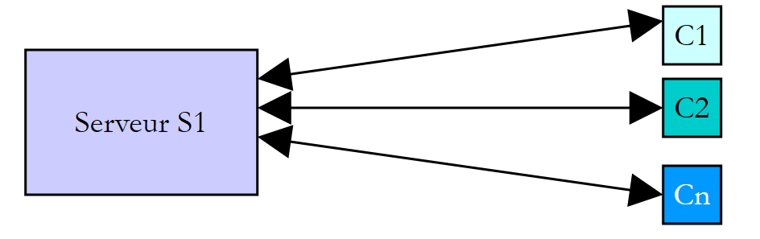
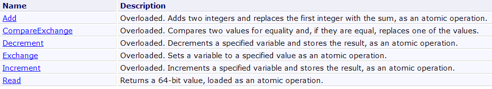
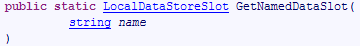

10. 执行线程
10.1. Thread类
当启动应用程序时，它会在称为线程的执行流中运行。用于建模线程的类是 NET，其定义如下：
构造函数
 |
在接下来的示例中，我们将仅使用 [1,3] 构造函数。 构造函数 [1] 接受一个方法作为参数，该方法的签名是 [2]，c.a.d。该方法有一个类型为 object 的参数，且不返回结果。 构造函数 [3] 接受一个方法作为参数，该方法的签名是 [4]、c.a.d，且没有参数，也不返回结果。
属性
一些有用的属性：
- 线程 CurrentThread：静态属性，返回请求该属性的代码所在线程的引用
- string Name：线程名称
- bool IsAlive：指示线程是否正在运行。
方法
最常用的方法如下：
- Start(), Start(object obj)：启动线程的异步执行，必要时可通过 object 类型向其传递信息。
- Abort()、Abort(object obj)：强制终止线程
- Join()：正在执行 T2.Join 的线程 T1 将被阻塞，直到线程 T2 结束。 还有一些变体可在指定时间后结束等待。
- Sleep(int n)：静态方法——执行该方法的线程将暂停 n 毫秒。在此期间，该线程将释放处理器，处理器将分配给另一个线程。
让我们看一个简单的示例，该示例突出了主执行线程的存在，即执行某个类中 Main 函数的线程：
using System;
using System.Threading;
namespace Chap8 {
class Program {
static void Main(string[] args) {
// 初始化当前线程
Thread main = Thread.CurrentThread;
// 显示
Console.WriteLine("Thread courant : {0}", main.Name);
// 更改名称
main.Name = "main";
// 验证
Console.WriteLine("Thread courant : {0}", main.Name);
// 无限循环
while (true) {
// 显示
Console.WriteLine("{0} : {1:hh:mm:ss}", main.Name, DateTime.Now);
// 临时停止
Thread.Sleep(1000);
}//while
}
}
}
- 第 8 行：获取执行 [main] 方法的线程引用
- 第10-14行：显示并修改该线程的名称
- 第 17-22 行：一个每秒显示一次的循环
- 第 21 行：执行方法 [main] 的线程将被挂起 1 秒
屏幕显示结果如下：
- 第 1 行：当前线程没有名称
- 第 2 行：它有一个名称
- 第3-7行：每秒显示的内容
- 第8行：按下Ctrl-C可中断程序。
10.2. 创建执行线程
某些应用程序中，部分代码会在不同的执行线程中“同时”运行。当我们说 threads 同时运行时，通常是一种措辞上的误用。 如果机器只有一个处理器（这种情况至今仍很常见），那么这些 thread 进程会共享这个处理器：它们轮流使用处理器，每次仅持续很短的时间（几毫秒）。这正是产生执行并行性错觉的原因。 分配给某个thread的时间段取决于多种因素，其中包括其优先级——该优先级虽有默认值，但也可通过编程设定。当一个thread获得处理器控制权时，通常会将其使用至分配时间的结束。不过，它也可能提前释放处理器：
- 进入事件等待状态（Wait, Join）
- 进入预定时长的休眠状态（Sleep）
- 一个线程 T 首先由上述构造函数之一创建，例如：
其中 Start 是一个具有以下两种签名之一的方法：
线程的创建并不意味着该线程会立即启动。
- 线程 T 的执行由 T.Start() 启动： 传递给 T 构造函数的 Start 方法随后将由线程 T 执行。执行 T.Start() 指令的程序不会等待任务 T 结束：它会立即跳转到下一条指令。 此时便有两个任务并行执行。它们通常需要相互通信，以了解共同工作的进展情况。这就是线程同步的问题。
- 线程 T 一旦启动，便会自主运行。当其执行的 Start 方法完成工作后，该线程才会停止。
- 我们可以强制线程 T 终止：
- T.Abort() 要求线程 T 终止。
- 也可以通过 T.Join() 等待其执行结束。这是一种阻塞指令：执行该指令的程序将被阻塞，直到任务 T 完成工作。这是一种同步方式。
让我们来看一下以下程序：
using System;
using System.Threading;
namespace Chap8 {
class Program {
public static void Main() {
// 初始化当前线程
Thread main = Thread.CurrentThread;
// 为线程命名
main.Name = "Main";
// 创建执行线程
Thread[] tâches = new Thread[5];
for (int i = 0; i < tâches.Length; i++) {
// 创建线程 i
tâches[i] = new Thread(Affiche);
// 设置线程名称
tâches[i].Name = i.ToString();
// 启动线程 i 的执行
tâches[i].Start();
}
// 主程序结束
Console.WriteLine("Fin du thread {0} à {1:hh:mm:ss}",main.Name,DateTime.Now);
}
public static void Affiche() {
// 显示开始执行
Console.WriteLine("Début d'exécution de la méthode Affiche dans le Thread {0} : {1:hh:mm:ss}",Thread.CurrentThread.Name,DateTime.Now);
// 休眠 1 秒
Thread.Sleep(1000);
// 显示执行结束
Console.WriteLine("Fin d'exécution de la méthode Affiche dans le Thread {0} : {1:hh:mm:ss}", Thread.CurrentThread.Name, DateTime.Now);
}
}
}
- 第8-10行：为执行方法[Main]的线程命名
- 第13-21行：创建5个线程并执行它们。将线程的引用存储在数组中，以便日后检索。每个线程执行第27-35行的方法Affiche。
- 第 20 行：启动第 i 个线程。此操作是非阻塞的。第 i 个线程将与启动它的 [Main] 方法的线程并行执行。
- 第24行：执行方法[Main]的线程结束。
- 第 27-35 行：方法 [Affiche] 进行输出。它显示了执行该方法的线程名称以及执行的开始和结束时间。
- 第31行：任何正在执行方法[Affiche]的线程都将暂停1秒。 此时，处理器将分配给另一个正在等待处理器的线程。暂停一秒后，该暂停的线程将重新成为处理器候选者。当轮到它时，它将获得处理器。这取决于多种因素，包括其他等待处理器的线程的优先级。
结果如下：
这些结果非常具有启发性：
- 首先可以看到，线程的启动并不阻塞。方法 Main 并行启动了 5 个线程的执行，并在它们之前完成了自身执行。操作
会启动线程 tâches[i] 的执行，但启动后，程序会立即继续执行下一条语句，而不会等待该线程执行完毕。
- 所有创建的线程都必须执行方法 Affiche。执行顺序是不可预测的。即使在示例中，执行顺序似乎遵循了执行请求的顺序，也不能据此得出普遍结论。 此处的操作系统拥有 6 个线程和 1 个处理器。它将根据自身的规则将处理器分配给这 6 个线程。
- 从结果中可以看到方法 Sleep 的执行效果。在该示例中，是线程 0 最先执行方法 Affiche。 执行开始消息显示后，它执行方法 Sleep，该方法使其暂停 1 秒。随后它失去处理器，处理器因此可供其他线程使用。示例显示线程 1 将获得该处理器。 线程 1 将遵循与其他线程相同的流程。当线程 0 的 1 秒休眠结束时，其执行即可恢复。系统将处理器分配给它，它便能完成方法 Affiche 的执行。
让我们修改程序，在方法 Main 的结尾添加以下指令：
// 主线程结束
Console.WriteLine("Fin du thread " + main.Name);
// 停止所有线程
Environment.Exit(0);
运行新程序后得到以下结果：
- 第1-5行：由函数Main创建的线程开始执行，并暂停1秒
- 第 6 行：线程 [Main] 夺取处理器并执行以下指令：
该指令会停止应用程序中的所有线程，而不仅仅是 Main 线程。
如果方法 Main 希望等待其创建的线程执行完毕，可以使用类 Thread 中的方法 Join：
public static void Main() {
...
// 等待所有线程
for (int i = 0; i < tâches.Length; i++) {
// 等待线程 i 执行结束
tâches[i].Join();
}
// 主线程结束
Console.WriteLine("Fin du thread {0} à {1:hh:mm:ss}", main.Name, DateTime.Now);
}
- 第 6 行：线程 [Main] 等待每个线程。它首先被阻塞，等待第 1 个线程，然后是第 2 个线程，依此类推……最终，当它退出第 2-5 行的循环时，即表示它启动的 5 个线程均已结束。
由此得到以下结果：
- 第 11 行：线程 [Main] 在其启动的线程完成后结束。
10.3. 线程的意义
既然我们已经指出了默认线程的存在（即执行方法 Main 的那个），并且知道如何创建其他线程，那么让我们来探讨一下线程对我们的意义，以及我们为何在此介绍它们。 有一种应用程序非常适合使用线程，那就是互联网上的客户端-服务器应用程序。我们将在下一章中介绍它们。 在互联网客户端-服务器应用程序中，位于 S1 机器上的服务器会响应位于远程机器 C1、C2、……、Cn 上的客户端的请求。
 |
我们每天都在使用符合此模式的互联网应用程序：Web服务、电子邮件、论坛浏览、文件传输……在上图中，服务器S1必须同时为客户端Ci提供服务。 如果以服务器 FTP（文件传输协议）为例，它向客户端提供文件，我们知道一次文件传输有时可能需要几分钟。当然，绝不能让一个客户端独自独占服务器这么长时间。 通常的做法是，服务器创建与客户端数量相等的执行线程。每个线程负责处理一个特定的客户端。由于处理器在机器上所有活动线程之间循环分配，服务器因此能与每个客户端进行短暂交互，从而确保服务的并发性。
 |
实际上，服务器会使用一个线程池，其中包含数量有限的线程，例如50个。第51个客户端则会被要求等待。
10.4. 线程间的信息交换
在之前的示例中，线程的初始化方式如下：
其中 Run 是一个具有以下签名的方法：
也可以使用以下签名：
这使得向已启动的线程传递信息成为可能。因此
将启动线程 t，该线程随后将执行其构造时关联的方法 Run，并向其传递实际参数 obj1。以下是一个示例：
using System;
using System.Threading;
namespace Chap8 {
class Program4 {
public static void Main() {
// 初始化当前线程
Thread main = Thread.CurrentThread;
// 为线程命名
main.Name = "Main";
// 创建执行线程
Thread[] tâches = new Thread[5];
Data[] data = new Data[5];
for (int i = 0; i < tâches.Length; i++) {
// 创建线程 i
tâches[i] = new Thread(Sleep);
// 设置线程名称
tâches[i].Name = i.ToString();
// 启动线程 i 的执行
tâches[i].Start(data[i] = new Data { Début = DateTime.Now, Durée = i+1 });
}
// 等待所有线程
for (int i = 0; i < tâches.Length; i++) {
// 等待线程 i 执行结束
tâches[i].Join();
// 显示结果
Console.WriteLine("Thread {0} terminé : début {1:hh:mm:ss}, durée programmée {2} s, fin {3:hh:mm:ss}, durée effective {4}",
tâches[i].Name,data[i].Début,data[i].Durée,data[i].Fin,(data[i].Fin-data[i].Début));
}
// 主线程结束
Console.WriteLine("Fin du thread {0} à {1:hh:mm:ss}", main.Name, DateTime.Now);
}
public static void Sleep(object infos) {
// 获取参数
Data data = (Data)infos;
// 休眠 Durée 秒
Thread.Sleep(data.Durée*1000);
// 执行结束
data.Fin = DateTime.Now;
}
}
internal class Data {
// 其他信息
public DateTime Début { get; set; }
public int Durée { get; set; }
public DateTime Fin { get; set; }
}
}
- 第 45-50 行：传递给线程的 [Data] 类型信息：
- Début：线程开始执行的时间——由启动线程设定
- Durée：被调用线程执行的Sleep时长（以秒为单位）——由调用线程设定
- Fin：线程开始执行的时间——由被启动的线程设定
- 第 35-43 行：线程执行的 Sleep 方法的签名是 void Sleep(object obj)。实际参数 obj 的类型为第 45 行定义的 [Data]。
- 第 15-22 行：创建 5 个线程
- 第 17 行：每个线程都关联到第 35 行的 Sleep 方法
- 第 21 行：将一个类型为 [Data] 的对象传递给方法 Start，该方法用于启动线程。该对象中记录了线程的执行开始时间以及其应休眠的时长（以秒为单位）。该对象存储在第 14 行的数组中。
- 第24-30行：线程[Main]等待其启动的所有线程结束。
- 第28-29行：线程[Main]从第i号线程中获取对象data[i]，并显示其内容。
- 第 35-42 行：由线程执行的 Sleep 方法
- 第 37 行：获取类型为 [Data] 的参数
- 第 39 行：使用参数的 Durée 字段来设置 Sleep 的持续时间
- 第41行：参数的字段Fin已初始化
执行结果如下：
此示例表明两个线程可以相互交换信息：
- 调用线程可以通过提供信息来控制被调用线程的执行
- 被调用线程可将结果返回给调用线程。
为了让被调用线程知道其等待的结果何时可用，必须通知它被调用线程已结束。在此示例中，它通过调用方法 Join 等待被调用线程结束。还有其他方法可以实现相同的效果，我们将在后续内容中探讨。
10.5. 对共享资源的并发访问
10.5.1. 未同步的并发访问
在关于线程间信息交换的段落中，信息仅在两个线程之间且在特定时刻进行交换。这属于典型的参数传递。 在其他情况下，信息可能由多个线程共享，这些线程可能希望在同一时刻读取或更新该信息。此时便会引发信息完整性的问题。假设共享的信息是一个包含各种信息 I1、I2、... In 的结构 S。
- 一个线程 T1 开始更新结构体 S：它修改了字段 I1，但在完成对结构体 S 的全部更新之前被中断
- 随后，获取处理器的线程 T2 读取结构 S 以进行决策。它读取到的结构处于不稳定状态：部分字段已更新，部分尚未更新。
这种情况被称为访问共享资源（此处指结构 S），通常处理起来相当棘手。以下示例将说明可能出现的问题：
- 一个应用程序将生成 n 个线程，其中 n 作为参数传递
- 共享资源是一个计数器，每个生成的线程都应将其递增
- 应用程序结束时，将显示计数器的值。因此，结果应为 n。
程序代码如下：
using System;
using System.Threading;
namespace Chap8 {
class Program {
// 类变量
static int cptrThreads = 0; // 线程计数器
//main
public static void Main(string[] args) {
// 使用说明
const string syntaxe = "pg nbThreads";
const int nbMaxThreads = 100;
// 参数数量检查
if (args.Length != 1) {
// 错误
Console.WriteLine(syntaxe);
// 停止
Environment.Exit(1);
}
// 参数质量检查
int nbThreads = 0;
bool erreur = false;
try {
nbThreads = int.Parse(args[0]);
if (nbThreads < 1 || nbThreads > nbMaxThreads)
erreur = true;
} catch {
// 错误
erreur = true;
}
// 错误？
if (erreur) {
// 错误
Console.Error.WriteLine("Nombre de threads incorrect (entre 1 et 100)");
// 结束
Environment.Exit(2);
}
// 线程的创建和生成
Thread[] threads = new Thread[nbThreads];
for (int i = 0; i < nbThreads; i++) {
// 创建
threads[i] = new Thread(Incrémente);
// 命名
threads[i].Name = "" + i;
// 启动
threads[i].Start();
}//for
// 等待线程结束
for (int i = 0; i < nbThreads; i++) {
threads[i].Join();
}
// 显示计数器
Console.WriteLine("Nombre de threads générés : " + cptrThreads);
}
public static void Incrémente() {
// 增加线程计数器
// 读取计数器
int valeur = cptrThreads;
// 跟踪
Console.WriteLine("A {0:hh:mm:ss}, le thread {1} a lu la valeur du compteur : {2}", DateTime.Now, Thread.CurrentThread.Name, cptrThreads);
// 等待
Thread.Sleep(1000);
// 计数器递增
cptrThreads = valeur + 1;
// 跟踪
Console.WriteLine("A {0:hh:mm:ss}, le thread {1} a écrit la valeur du compteur : {2}", DateTime.Now, Thread.CurrentThread.Name, cptrThreads);
}
}
}
我们不再赘述已学过的线程生成部分。让我们关注第59行的方法Incrémente，每个线程都使用该方法来递增第8行的静态计数器cptrThreads。
- 第62行：读取计数器
- 第 66 行：线程暂停 1 秒。因此它将失去处理器
- 第68行：计数器被递增
步骤 2 仅用于强制线程失去处理器控制权。该控制权将被分配给另一个线程。实际上，无法保证在线程读取计数器值与增量计数器值之间，该线程不会被中断。 即使编写为 cptrThreads++，从而给人一种单一指令的错觉，但在读取计数器值与写入其加1后的值之间，仍存在失去处理器控制权的风险。 实际上，高级操作 cptrThreads++ 在处理器层面将分解为多个基本指令。因此，第二步中的一秒钟休眠仅是为了系统化地规避这一风险。
使用 5 个线程获得的结果如下：
通过这些结果，我们可以清楚地看到发生了什么：
- 第 1 行：第一个线程读取计数器。它发现值为 0。该线程暂停 1 秒，因此失去了处理器
- 第2行：第二个线程接管处理器，同样读取计数器值。由于前一个线程尚未将其递增，该值仍为0。该线程也暂停1秒，进而失去处理器控制权。
- 第1-5行：在1秒内，5个线程都有时间依次运行并读取到0值。
- 第6-10行：当它们依次恢复运行时，会将读取到的0值递增，并将1写入计数器，这在第11行的主程序（Main）中得到了验证。
问题出在哪里？第二个线程读取了错误的值，因为第一个线程在完成其工作（即更新窗口中的计数器）之前就被中断了。这引出了程序中关键资源和关键区段的概念：
- 关键资源是指一次只能由一个线程持有的资源。在此，关键资源即为计数器。
- 程序中的关键区是指线程执行流中的一段指令序列，在此期间线程会访问关键资源。必须确保在此关键区期间，只有该线程能够访问该资源。
在我们的示例中，关键区是位于读取计数器与写入新值之间的代码：
// 读表
int valeur = cptrThreads;
// 等待
Thread.Sleep(1000);
// 计数器递增
cptrThreads = valeur + 1;
要执行这段代码，必须确保线程处于独占状态。该线程可能会被中断，但在中断期间，其他线程不得执行这段代码。该平台提供了多种工具来确保对代码关键区的独占访问。下面我们将介绍其中几种。
10.5.2. lock 子句
lock 子句可用于按以下方式界定关键代码段：
obj 必须是所有执行该关键代码段的线程均可访问的对象引用。lock 子句确保每次仅有一个线程执行该关键代码段。前面的示例重写如下：
using System;
using System.Threading;
namespace Chap8 {
class Program2 {
// 类变量
static int cptrThreads = 0; // 线程计数器
static object synchro = new object(); // 同步对象
//主函数
public static void Main(string[] args) {
...
// 等待线程结束
Thread.CurrentThread.Name = "Main";
for (int i = nbThreads - 1; i >= 0; i--) {
Console.WriteLine("A {0:hh:mm:ss}, le thread {1} attend la fin du thread {2}", DateTime.Now, Thread.CurrentThread.Name, threads[i].Name);
threads[i].Join();
Console.WriteLine("A {0:hh:mm:ss}, le thread {1} a été prévenu de la fin du thread {2}", DateTime.Now, Thread.CurrentThread.Name, threads[i].Name);
}
// 显示计数器
Console.WriteLine("Nombre de threads générés : " + cptrThreads);
}
public static void Incrémente() {
// 增加线程计数器
// 请求计数器的独占访问
Console.WriteLine("A {0:hh:mm:ss}, le thread {1} attend l'autorisation d'entrer dans la section critique", DateTime.Now, Thread.CurrentThread.Name);
lock (synchro) {
// 读取计数器
int valeur = cptrThreads;
// 跟踪
Console.WriteLine("A {0:hh:mm:ss}, le thread {1} a lu la valeur du compteur : {2}", DateTime.Now, Thread.CurrentThread.Name, cptrThreads);
// 等待
Thread.Sleep(1000);
// 计数器递增
cptrThreads = valeur + 1;
// 跟踪
Console.WriteLine("A {0:hh:mm:ss}, le thread {1} a écrit la valeur du compteur : {2}", DateTime.Now, Thread.CurrentThread.Name, cptrThreads);
}
Console.WriteLine("A {0:hh:mm:ss}, le thread {1} a quitté la section critique", DateTime.Now, Thread.CurrentThread.Name);
}
}
}
- 第 9 行：synchro 是用于同步所有线程的对象。
- 第 16-23 行：方法 [Main] 按线程创建的逆序等待线程。
- 第 29-40 行：方法 Incrémente 的关键部分由子句 lock 进行保护。
使用 3 个线程获得的结果如下：
- 线程0最先进入关键区：第1、2、6、8行
- 只要线程 0 尚未离开临界区，另外两个线程就会被阻塞：第 3 行和第 4 行
- 随后线程 1 执行：第 7、9、10 行
- 随后线程 2 执行：第 11、12、13 行
- 第14行：正在等待线程2结束的主线程（Main）收到通知
- 第15行：Main线程现在等待线程1结束。该线程已结束。Main线程立即收到通知，第16行。
- 第17-18行：线程0也经历了同样的过程
- 第19行：线程数量正确
10.5.3. Mutex 类
System.Threading.Mutex 类同样可用于划分关键区。它在可见性方面与 lock 子句有所不同：
- lock 子句用于同步同一应用程序内的线程
- Mutex 类则用于同步不同应用程序中的线程。
我们将使用以下构造函数和方法：
创建一个 Mutex M | |
执行 M.WaitOne() 操作的线程 T1 请求获取同步对象 M 的所有权。如果 Mutex M 尚未被任何线程持有（初始状态）， 它将被“分配”给请求它的线程 T1。如果稍后另一个线程 T2 执行相同操作，它将被阻塞。因为一个 Mutex 只能属于一个线程。 当线程 T1 释放其持有的 Mutex M 时，该线程将被解锁。因此，可能有多个线程因等待 Mutex M 而被阻塞。 | |
执行 M.ReleaseMutex() 操作的线程 T1 放弃了对互斥锁 Mutex M 的持有。当线程 T1 失去处理器时， 系统可将处理器分配给正在等待互斥锁 M 的线程之一。只有一个线程能获得处理器，其余等待 M 的线程将保持阻塞状态 |
一个 Mutex M 管理对共享资源 R 的访问。一个线程通过 M.WaitOne() 请求资源 R，并通过 M.ReleaseMutex() 释放它。 一个每次只能由单个线程执行的关键代码段即为共享资源。关键代码段的执行同步可通过以下方式实现：
其中 M 是一个 Mutex 对象。切记要释放不再需要的 Mutex，以便其他线程能够进入临界区，否则那些等待着从未被释放的 Mutex 的线程将永远无法访问处理器。
如果我们将刚才所学的内容应用到前面的示例中，我们的应用程序将变为如下所示：
using System;
using System.Threading;
namespace Chap8 {
class Program3 {
// 类变量
static int cptrThreads = 0; // 线程计数器
static Mutex synchro = new Mutex(); // 同步对象
//main
public static void Main(string[] args) {
...
}
public static void Incrémente() {
....
synchro.WaitOne();
try {
...
} finally {
...
synchro.ReleaseMutex();
}
}
}
}
- 第 9 行：线程的同步对象现在是 Mutex。
- 第 18 行：关键区开始——该区域只能由一个线程进入。在此处阻塞，直到 Mutex synchro 被释放。
- 第 33 行：由于 Mutex 必须始终被释放（无论是否发生异常），因此使用 try/finally 块处理临界区，以便在 finally 中释放 Mutex。
- 第 23 行：在通过关键部分后，释放 Mutex。
所得结果与之前相同。
10.5.4. AutoResetEvent 类
AutoResetEvent 对象是一个仅允许单线程通过的屏障，与前两个工具 lock 和 Mutex 类似。AutoResetEvent 对象的构建方式如下：
布尔值 état 表示屏障的关闭（false）或打开（true）状态。希望通过屏障的线程将按以下方式进行标识：
- 如果屏障处于打开状态，线程通过后屏障会在其身后重新关闭。如果有多个线程在等待，则可确保仅有一个线程通过。
- 如果屏障处于关闭状态，该线程将被阻塞。另一个线程将在适当的时候将其打开。这个时机完全取决于所处理的问题。屏障将通过以下操作打开：
有时，一个线程可能希望关闭一道屏障。它可以通过以下操作实现：
如果在前面的示例中，将对象 Mutex 替换为类型为 AutoResetEvent 的对象，代码将变为如下形式：
using System;
using System.Threading;
namespace Chap8 {
class Program4 {
// 类变量
static int cptrThreads = 0; // 线程计数器
static EventWaitHandle synchro = new AutoResetEvent(false); // 同步对象
//主函数
public static void Main(string[] args) {
....
// 打开临界区门
Console.WriteLine("A {0:hh:mm:ss}, le thread {1} ouvre la barrière de la section critique", DateTime.Now, Thread.CurrentThread.Name);
synchro.Set();
// 等待线程结束
...
// 显示计数器
Console.WriteLine("Nombre de threads générés : " + cptrThreads);
}
public static void Incrémente() {
// 增加线程计数器
// 请求计数器的独占访问
...
synchro.WaitOne();
try {
...
} finally {
// 释放资源
...
synchro.Set();
}
}
}
}
- 第 9 行：创建了处于关闭状态的屏障。它将由线程 Main 在第 16 行打开。
- 第27行：负责递增线程计数器的线程请求进入临界区的许可。各个线程将在关闭的屏障前积压。当线程Main打开屏障时，其中一个等待的线程将通过。
- 第33行：当该线程完成工作后，它会重新打开屏障，允许另一个线程进入。
结果与前文类似。
10.5.5. Interlocked 类
Interlocked 类可使一组操作具有原子性。在一组操作 atomique 中，要么所有操作都由执行该组的线程执行，要么一个都不执行。不会出现部分操作已执行而部分未执行的状态。 同步对象 lock、Mutex、AutoResetEvent 的目的都是将 atomique 作为一组操作。这一结果是以线程阻塞为代价实现的。 对于简单但频繁的操作，Interlocked 类可避免线程阻塞。Interlocked 类提供以下静态方法：

方法 Increment 的签名如下：
该方法可将参数 location 递增 1。该操作具有 atomique 级别的并发性保证。
因此，我们的线程计数程序可以如下所示：
using System;
using System.Threading;
namespace Chap8 {
class Program5 {
// 类变量
static int cptrThreads = 0; // 线程计数器
//main
public static void Main(string[] args) {
...
}
public static void Incrémente() {
// 递增线程计数器
Interlocked.Increment(ref cptrThreads);
}
}
}
- 第 17 行：线程计数器以原子方式递增。
10.6. 对多个共享资源的并发访问
10.6.1. 一个示例
在之前的示例中，不同线程共享的是单一资源。 如果存在多个资源且它们相互依赖，情况可能会变得复杂。特别是可能会发生死锁。这种情况也被称为 deadlock，即两个线程相互等待。考虑以下按时间顺序发生的操作：
- 线程 T1 获取互斥锁 M1 的所有权，以便访问共享资源 R1
- 线程 T2 获取互斥锁 M2 的所有权，以便访问共享资源 R2
- 线程 T1 请求互斥锁 M2。它被阻塞。
- 线程 T2 请求互斥锁 M1。该线程被阻塞。
在此，线程 T1 和 T2 处于相互等待状态。 这种情况发生在线程需要两个共享资源时：由互斥锁 M1 控制的资源 R1，以及由互斥锁 M2 控制的资源 R2。 一种可能的解决方案是使用单个互斥锁 M 同时请求这两个资源。但如果这会导致高成本资源被长时间占用，则这种方法并不总是可行。 另一种解决方案是：持有 M1 且无法获取 M2 的线程，应释放 M1 以避免死锁。
- 我们有一个数组，其中一些线程负责写入数据（写入者），另一些线程负责读取数据（读取者）。
- 写入线程之间是平等的，但具有互斥性：每次只有一个写入线程可以向数组中写入数据。
- 读取者之间是平等的，但互斥的：同一时间只有一个读取者可以读取数组中的数据。
- 读取者只能在写入者向数组中写入数据后读取数据，而写入者只能在读取者读取了数组中的数据后向数组中写入新数据。
可以区分两种共享资源：
- 可写表：每次仅允许一名写入者访问。
- 只读表：每次只能有一个读取者访问。
以及使用这些资源的顺序：
- 读取操作必须始终在写入操作之后进行。
- 写入者必须始终在读取者之后，首次情况除外。
可通过两个类型为 AutoResetEvent 的访问控制点来管理这两项资源的访问权限：
- peutEcrire 访问控制将管理写入者对数组的访问。
- peutLire 闸机将控制读卡器对该区域的访问。
- peutEcrire 道闸初始状态为打开，允许第一位写入者通过，并阻止其他所有人。
- peutLire 道闸初始状态为关闭，阻挡所有读取者。
- 当一个写入者完成工作后，他将打开 peutLire 道闸，让一个读取者进入。
- 当某位读者完成工作后，他将打开 peutEcrire 道闸，让一位写入者进入。
演示这种基于事件的同步的程序如下：
using System;
using System.Threading;
namespace Chap8 {
class Program {
// 使用读写线程
// 演示同步事件的使用
// 类变量
static int[] data = new int[3]; // 读线程与写线程之间的共享资源
static Random objRandom = new Random(DateTime.Now.Second); // 一个随机数生成器
static AutoResetEvent peutLire; // 指出可以读取 data 的内容
static AutoResetEvent peutEcrire; // 表示可以写入 data 的内容
//主函数
public static void Main(string[] args) {
// 要生成的线程数
const int nbThreads = 2;
// 标志位初始化
peutLire = new AutoResetEvent(false); // 目前还无法读取
peutEcrire = new AutoResetEvent(true); // 已可写入
// 创建读取线程
Thread[] lecteurs = new Thread[nbThreads];
for (int i = 0; i < nbThreads; i++) {
// 创建
lecteurs[i] = new Thread(Lire);
lecteurs[i].Name = "L" + i.ToString();
// 启动
lecteurs[i].Start();
}
// 创建写入线程
Thread[] écrivains = new Thread[nbThreads];
for (int i = 0; i < nbThreads; i++) {
// 创建
écrivains[i] = new Thread(Ecrire);
écrivains[i].Name = "E" + i.ToString();
// 启动
écrivains[i].Start();
}
//结束
Console.WriteLine("Fin de Main...");
}
// 读取数组内容
public static void Lire() {
...
}
// 向数组写入数据
public static void Ecrire() {
....
}
}
}
- 第 11 行：数组 data 是读线程和写线程之间的共享资源。该数组对读线程开放读取权限，对写线程开放写入权限。
- 第13行：对象peutLire用于通知读取线程它们可以读取数组data。该对象由填满数组data的写入线程设为true。 该对象在第23行被初始化为 false。必须先由一个写入线程填充数组，然后才能将事件 peutLire 传递给 vrai。
- 第14行：对象peutEcrire用于通知写入线程，它们可以向数组data写入数据。该对象由读取完整个数组data的读取线程设为true。 该对象在第24行初始化为true。实际上，数组data处于可写状态。
- 第27-34行：创建并启动读取线程
- 第 37-44 行：创建并启动写入线程
由读取线程执行的 Lire 方法如下：
public static void Lire() {
// 跟踪
Console.WriteLine("Méthode [Lire] démarrée par le thread n° {0}", Thread.CurrentThread.Name);
// 需等待读取授权
peutLire.WaitOne();
// 读取数组
for (int i = 0; i < data.Length; i++) {
//等待 1 秒
Thread.Sleep(1000);
// 显示
Console.WriteLine("{0:hh:mm:ss} : Le lecteur {1} a lu le nombre {2}", DateTime.Now, Thread.CurrentThread.Name, data[i]);
}
// 可以写入
peutEcrire.Set();
// 跟踪
Console.WriteLine("Méthode [Lire] terminée par le thread n° {0}", Thread.CurrentThread.Name);
}
- 第 5 行：等待一个写入线程报告数组已填满。收到该信号后，等待该信号的读取线程中仅有一个可以进入。
- 第7-12行：利用数组data，并在中间插入Sleep以强制线程让出处理器。
- 第14行：通知写入线程数组已被读取，可以重新填充。
由写入线程执行的 Ecrire 方法如下：
public static void Ecrire() {
// 跟踪
Console.WriteLine("Méthode [Ecrire] démarrée par le thread n° {0}", Thread.CurrentThread.Name);
// 需等待写入授权
peutEcrire.WaitOne();
// 数组写入
for (int i = 0; i < data.Length; i++) {
//等待 1 秒
Thread.Sleep(1000);
// 显示
data[i] = objRandom.Next(0, 1000);
Console.WriteLine("{0:hh:mm:ss} : L'écrivain {1} a écrit le nombre {2}", DateTime.Now, Thread.CurrentThread.Name, data[i]);
}
// 可以读取
peutLire.Set();
// 跟踪
Console.WriteLine("Méthode [Ecrire] terminée par le thread n° {0}", Thread.CurrentThread.Name);
}
- 第 5 行：等待某个读取线程发出数组已读取的信号。当接收到该信号时，等待该信号的写入线程中仅有一个能被唤醒。
- 第 7-13 行：利用数组 data，并在其中间插入 Sleep 以强制线程让出处理器。
- 第15行：通知读取线程数组已填满，可以再次读取。
执行结果如下：
可以注意到以下几点：
- 确实每次只有一个读取线程，尽管该线程在临界区 Lire 中会失去处理器
- 确实每次只有一个写入者，尽管该写入者在关键区 Ecrire 中会失去处理器
- 读取器仅在数组中有数据可读时才进行读取
- 写入器仅在数组被完全读取后才进行写入
10.6.2. Monitor 类
在上例中：
- 有两个共享资源需要管理
- 对于给定的资源，线程是平等的。
当写入线程在指令 peutEcrire.WaitOne 上被阻塞时，其中任意一个线程会被操作 peutEcrire.Set 解锁。如果前一个操作需要为某个特定的写入者打开屏障，情况就会变得更加复杂。
这可以类比为一个设有服务窗口的公共机构，每个窗口都负责特定业务。当客户到达时，他会在取号机上取一张X窗口的号牌，然后去就座。每张号牌都有编号，客户会通过扬声器按其编号被叫号。 等待期间，客户可以自由活动。他可以阅读或打盹。每次广播宣布“X号窗口请Y号客户”时，他就会被唤醒。如果是自己，客户便起身前往X号窗口；否则，他继续做自己的事。
这里也可以采用类似的运作方式。以作家为例：
他们的线程被阻塞 | |
使用该数组的读取线程会通知写入线程该数组已可用。该线程或另一个线程已锁定写入线程，使其必须通过屏障。 | |
每个线程都会检查自己是否被选中。如果是，则通过屏障；如果不是，则重新进入等待状态。 |
Monitor 类可用于实现此场景。

现在，我们将介绍一种标准结构（pattern），该结构出自本文引言中提及的《C# 3.0》一书的Threading章节，能够解决带有进入条件的屏障问题。
- 首先，共享资源（如服务窗口等）的线程需通过一个我们称为“令牌”的对象来访问该资源。要打开通往服务窗口的屏障，必须持有该令牌，且仅有一个令牌。因此，线程之间必须相互传递该令牌。
- 为了前往服务窗口，线程首先需要请求令牌：
如果令牌可用，则将其分配给执行了上一操作的线程；否则，该线程将进入等待令牌的状态。
- 如果前往窗口的访问是无序的，c.a.d。在进入者不重要的情况下，前面的操作就足够了。持有令牌的线程前往窗口。如果访问是有序的，持有令牌的线程会检查自己是否满足前往窗口的条件：
如果该线程并非窗口预期接收的线程，则它将放弃当前轮次并归还令牌。该线程进入阻塞状态。一旦令牌再次可供其使用，它将被唤醒。届时，它将再次验证是否满足前往窗口的条件。 释放令牌的操作 Monitor.Wait(令牌) 仅当该线程是令牌的所有者时才能执行。否则，将抛出异常。
- 检查前往服务窗口条件的线程将前往该窗口：
- // 窗口处理
- ....
在离开服务窗口之前，该线程必须归还其令牌，否则被阻塞并等待该令牌的线程将无限期地保持阻塞状态。有两种不同的情况：
- 第一种情况是：持有令牌的线程同时负责通知等待该令牌的线程，告知令牌已释放。它将通过以下方式实现：
第 6 行，它唤醒了正在等待令牌的线程。这种唤醒意味着它们有资格接收令牌，但这并不意味着它们会立即收到。第 8 行，令牌被释放。 所有符合条件的线程将以非确定性顺序依次获得令牌。这将使它们有机会再次检查是否满足访问条件。释放令牌的线程已在第4行修改了该条件，以便允许新线程进入。第一个通过检查的线程将保留令牌，并轮到它前往服务窗口。
- 第二种情况是：持有令牌的线程并非负责通知等待线程“令牌已释放”的那个线程。但它仍需释放令牌，因为负责发送该信号的线程必须是当前令牌持有者。它将通过以下操作实现：
令牌现已可用，但等待它的线程（它们已执行了 Wait(令牌) 操作）并未收到通知。这项任务交由另一个线程负责，该线程将在某个时刻执行类似于以下代码的操作：
最终，《C# 3.0》一书第 Threading 章提出的标准实现如下：
- 定义访问令牌：
- 请求访问服务窗口：
等同于
需要注意的是，在此方案中，一旦通过了屏障，令牌就会立即释放。此时，另一个线程可以测试访问条件。因此，上述构造允许所有检查访问条件的线程进入。如果这不是期望的结果，可以编写如下代码：
其中，令牌仅在经过服务窗口后才会被释放。
- 修改窗口访问条件并通知其他线程
在上述情况下，只有持有令牌的线程才能修改访问条件。也可以这样写：
如果该线程已经持有令牌。
有了这些信息，我们可以重写读写应用程序，为读取者和写入者访问各自的通道设定访问顺序。代码如下：
using System;
using System.Threading;
namespace Chap8 {
class Program2 {
// 读写线程的使用
// 演示同步事件的使用
// 类变量
static int[] data = new int[3]; // 读线程与写线程之间的共享资源
static Random objRandom = new Random(DateTime.Now.Second); // 一个随机数生成器
static object peutLire = new object(); // 指出可以读取 data 的内容
static object peutEcrire = new object(); // 表示可以写入 data 的内容
static bool lectureAutorisée = false; // 用于授权读取数组
static bool écritureAutorisée = false; // 用于授权向数组写入
static string[] ordreLecture; // 设定读取者的顺序
static string[] ordreEcriture; // 确定写入者的顺序
static int lecteurSuivant = 0; // 指示下一个读取器的编号
static int écrivainSuivant = 0; // 指示下一个写入器的编号
//主
public static void Main(string[] args) {
// 要生成的线程数
const int nbThreads = 5;
// 创建读取线程
Thread[] lecteurs = new Thread[nbThreads];
for (int i = 0; i < nbThreads; i++) {
// 创建
lecteurs[i] = new Thread(Lire);
lecteurs[i].Name = "L" + i.ToString();
// 启动
lecteurs[i].Start();
}
// 创建读取任务
ordreLecture = new string[nbThreads];
for (int i = 0; i < nbThreads; i++) {
ordreLecture[i] = lecteurs[nbThreads - i - 1].Name;
Console.WriteLine("Le lecteur {0} est en position {1}", ordreLecture[i], i);
}
// 创建写入线程
Thread[] écrivains = new Thread[nbThreads];
for (int i = 0; i < nbThreads; i++) {
// 创建
écrivains[i] = new Thread(Ecrire);
écrivains[i].Name = "E" + i.ToString();
// 启动
écrivains[i].Start();
}
// 创建写入队列
ordreEcriture = new string[nbThreads];
for (int i = 0; i < nbThreads; i++) {
ordreEcriture[i] = écrivains[i].Name;
Console.WriteLine("L'écrivain {0} est en position {1}", ordreEcriture[i], i);
}
// 写入授权
lock (peutEcrire) {
écritureAutorisée = true;
Monitor.Pulse(peutEcrire);
}
//结束处理
Console.WriteLine("Fin de Main...");
}
// 读取数组内容
public static void Lire() {
...
}
// 向数组写入
public static void Ecrire() {
...
}
}
}
对读取窗口的访问取决于以下条件：
- 第 13 行：令牌 peutLire
- 第 15 行：布尔值 lectureAutorisée
- 第17行：读取器的有序数组。读取器将按照该数组中包含其姓名的顺序前往读取窗口。
- 第19行：lecteurSuivant表示下一位获准前往窗口的读卡器的编号。
写入窗口的访问受以下要素限制：
- 第14行：令牌 peutEcrire
- 第16行：布尔值 écritureAutorisée
- 第18行：写入者的有序数组。写入者将按照该数组中包含其名字的顺序前往写入窗口。
- 第20行：écrivainSuivant表示下一位获准前往窗口的写入者的编号。
代码的其他部分如下：
- 第29-36行：创建并启动读取线程。由于不允许读取（第15行），这些线程都将被阻塞。
- 第39-43行：它们在窗口的处理顺序将与创建顺序相反。
- 第46-53行：创建并启动写入线程。由于不允许写入（第16行），这些线程都将被阻塞。
- 第56-60行：它们在窗口的处理顺序将按创建顺序进行。
- 第64行：允许写入
- 第65行：通知写入线程发生了变化。
方法 Lire 如下：
public static void Lire() {
// 跟踪
Console.WriteLine("Méthode [Lire] démarrée par le thread n° {0}", Thread.CurrentThread.Name);
// 需等待读取授权
lock (peutLire) {
while (!lectureAutorisée || ordreLecture[lecteurSuivant] != Thread.CurrentThread.Name) {
Monitor.Wait(peutLire);
}
// 读取表格
for (int i = 0; i < data.Length; i++) {
//等待 1 秒
Thread.Sleep(1000);
// 显示
Console.WriteLine("{0:hh:mm:ss} : Le lecteur {1} a lu le nombre {2}", DateTime.Now, Thread.CurrentThread.Name, data[i]);
}
// 下一个读取器
lectureAutorisée = false;
lecteurSuivant++;
// 通知写入者可以进行写入
lock (peutEcrire) {
écritureAutorisée = true;
Monitor.PulseAll(peutEcrire);
}
// 跟进
Console.WriteLine("Méthode [Lire] terminée par le thread n° {0}", Thread.CurrentThread.Name);
}
}
- 整个窗口访问过程由第5-27行的lock控制。获取令牌的读卡器在整个窗口访问过程中都会保留该令牌
- 第6-8行：获取第5行令牌的读卡器，若读取未获授权或非其轮次，则释放该令牌。
- 第10-15行：窗口操作（利用数组）
- 第17-18行：线程更改读取窗口的访问条件。需注意，此时它仍持有读取令牌，且这些修改尚无法允许读取者进入。
- 第20-23行：线程更改写入窗口的访问条件，并通知所有等待中的写入者情况已发生变化。
- 第27行：lock 结束，释放 peutLire 令牌。此时读取线程虽可获取该令牌（第5行），但因布尔值 lectureAutorisée 为假，故无法通过访问条件。 此外，所有正在等待令牌 peutLire 的线程仍处于等待状态，因为操作 PulseAll(peutLire) 尚未发生。
方法 Ecrire 如下：
public static void Ecrire() {
// 跟进
Console.WriteLine("Méthode [Ecrire] démarrée par le thread n° {0}", Thread.CurrentThread.Name);
// 必须等待写入授权
lock (peutEcrire) {
while (!écritureAutorisée || ordreEcriture[écrivainSuivant] != Thread.CurrentThread.Name) {
Monitor.Wait(peutEcrire);
}
// 写入数组
for (int i = 0; i < data.Length; i++) {
//等待 1 秒
Thread.Sleep(1000);
// 显示
data[i] = objRandom.Next(0, 1000);
Console.WriteLine("{0:hh:mm:ss} : L'écrivain {1} a écrit le nombre {2}", DateTime.Now, Thread.CurrentThread.Name, data[i]);
}
// 下一个写入者
écritureAutorisée = false;
écrivainSuivant++;
// 唤醒等待令牌的读取器 peutLire
lock (peutLire) {
lectureAutorisée = true;
Monitor.PulseAll(peutLire);
}
// 跟进
Console.WriteLine("Méthode [Ecrire] terminée par le thread n° {0}", Thread.CurrentThread.Name);
}
}
- 对写入窗口的全部访问均由第5至27行的lock控制。获取令牌的写入者在其整个窗口操作期间都会保留该令牌
- 第6-8行：获取令牌（第5行）的写入者，若写入操作未获授权或非其轮次，则释放该令牌。
- 第10-16行：处理队列（利用数组）
- 第18-19行：线程更改写入窗口的访问条件。需注意，该线程仍持有写入令牌，且这些修改尚无法允许写入者进入。
- 第21-24行：线程更改读写通道的访问条件，并通知所有等待中的读取者已发生变更。
- 第27行：lock结束，peutEcrire令牌被释放。此时，一个写入线程可能获取该令牌（第5行），但由于布尔值écritureAutorisée为假，因此无法通过访问条件。 此外，所有正在等待令牌 peutEcrire 的线程仍将保持等待状态，以等待新的操作 PulseAll(peutEcrire)。
执行示例如下：
10.7. 线程池
迄今为止，为了管理线程：
- 我们通过 Thread T=new Thread(...) 创建它们
- 然后通过 T.Start() 执行
我们在“数据库”一章中看到，使用某些 SGBD 可以建立打开的连接池：
- n 连接在连接池启动时即被打开
- 当线程请求连接时，系统会从连接池中分配一个已打开的连接
- 当线程关闭连接时，该连接不会被关闭，而是归还给连接池
在代码层面，连接池的使用是透明的。其优势在于提升性能：建立连接的开销很大。在此情况下，10个已建立的连接即可处理数百个请求。
线程方面也存在类似的机制：
- 在连接池启动时会创建 min 个线程。min 的值通过方法 ThreadPool.SetMinThreads(min1,min2) 设定。 线程池可用于执行阻塞任务或非阻塞（即异步）任务。第一个参数 min1 设定阻塞线程的数量，第二个参数 min2 设定异步线程的数量。 可通过 ThreadPool.GetMinThreads(out min1,out min2) 获取这两个参数的当前值。
- 如果该数量不足，线程池将创建更多线程来响应请求，直到达到 max 设定的线程上限。 max 的值通过方法 ThreadPool.SetMaxThreads(max1,max2) 设定。这两个参数的含义与方法 SetMinThreads 中相同。 可通过 ThreadPool.GetMaxThreads(out max1,out max2) 获取这两个值的当前数值。当达到 max1 线程数时，阻塞任务的线程请求将被挂起，等待线程池中释放出空闲线程。
线程池具有多种优势：
- 与连接池类似，可节省创建线程的时间：10 个线程即可处理数百个请求。
- 增强应用程序安全性：通过设定最大线程数，可避免因请求过多导致应用程序瘫痪。这些请求将被放入队列中。
要向池中的线程分配任务，可使用以下两种方法之一：
- ThreadPool.QueueWorkItem(WaitCallBack)
- ThreadPool.QueueWorkItem(WaitCallBack,object)
其中 WaitCallBack 代表任何具有签名 void WaitCallBack(object) 的方法。 方法 1 要求一个线程执行方法 WaitCallBack，但不向其传递任何参数。方法 2 执行相同操作，但向方法 WaitCallBack 传递了一个类型为 object 的参数。
以下是一个演示这些概念的程序：
using System;
using System.Threading;
namespace Chap8 {
class Program {
public static void Main() {
// 初始化当前线程
Thread main = Thread.CurrentThread;
// 为线程设置名称
main.Name = "Main";
// 使用线程池
int min1, min2;
// 设置阻塞线程的最小数量
ThreadPool.GetMinThreads(out min1, out min2);
Console.WriteLine("Nombre minimum de tâches bloquantes dans le pool : {0}", min1);
Console.WriteLine("Nombre minimum de tâches asynchrones dans le pool : {0}", min2);
ThreadPool.SetMinThreads(3, min2);
ThreadPool.GetMinThreads(out min1, out min2);
Console.WriteLine("Nombre minimum de tâches bloquantes dans le pool après changement : {0}", min1);
// 设置阻塞线程的最大数量
int max1, max2;
ThreadPool.GetMaxThreads(out max1, out max2);
Console.WriteLine("Nombre maximum de tâches bloquantes dans le pool : {0}", max1);
Console.WriteLine("Nombre maximum de tâches asynchrones dans le pool : {0}", max2);
ThreadPool.SetMaxThreads(5, max2);
ThreadPool.GetMaxThreads(out max1, out max2);
Console.WriteLine("Nombre maximum de tâches bloquantes dans le pool après changement : {0}", max1);
// 执行 7 个线程
for (int i = 0; i < 7; i++) {
// 在线程池中启动线程 i 的执行
ThreadPool.QueueUserWorkItem(Sleep, new Data2 { Numéro = i.ToString(), Début = DateTime.Now, Durée = i + 10 });
}
// 主程序结束
Console.Write("Tapez [entrée] pour terminer le thread {0} à {1:hh:mm:ss:FF}", main.Name, DateTime.Now);
// 等待
Console.ReadLine();
}
public static void Sleep(object infos) {
// 获取参数
Data2 data = infos as Data2;
Console.WriteLine("A {2:hh:mm:ss:FF}, le thread n° {0} va dormir pendant {1} seconde(s)", data.Numéro, data.Durée,DateTime.Now);
// 线程池状态
int cpt1, cpt2;
ThreadPool.GetAvailableThreads(out cpt1, out cpt2);
Console.WriteLine("Nombre de threads pour tâches bloquantes disponibles dans le pool : {0}", cpt1);
// 休眠 Durée 秒
Thread.Sleep(data.Durée * 1000);
// 执行结束
data.Fin = DateTime.Now;
Console.WriteLine("A {3:hh:mm:ss:FF}, le thread n° {0} se termine. Il était programmé pour durer {1} seconde(s). Il a duré {2} seconde(s)", data.Numéro, data.Durée, data.Fin - data.Début,DateTime.Now);
}
}
internal class Data2 {
// 其他信息
public string Numéro { get; set; }
public DateTime Début { get; set; }
public int Durée { get; set; }
public DateTime Fin { get; set; }
}
}
- 第 15-17 行：查询并显示线程池中两种类型线程的当前最小数量
- 第 18 行：将阻塞任务的最小线程数更改为 2
- 第 19-21 行：显示新的最小值
- 第22-28行：采用相同方法将阻塞任务的线程最大数设置为5
- 第30-33行：在5个线程的线程池中执行7个任务。其中5个任务应各获得1个线程，前2个任务能快速获得（因始终有2个线程可用），其余3个任务需等待0.5秒。另有2个任务需等待线程释放。
- 第32行：任务调用第40-54行中的Sleep方法，并向其传递一个类型为Data2的参数（该类型在第56-62行中定义）。
- 第40行：任务执行的方法Sleep
- 第 42 行：获取传递给方法 Sleep 的参数。
- 第 43 行：任务在控制台上进行身份验证
- 第 45-47 行：显示当前可用的线程数。我们希望观察其变化情况。
- 第 49 行：任务暂停几秒钟（阻塞任务）。
- 第 52 行：任务恢复运行后，显示其账户的若干信息。
所得结果如下。
对于线程池中的 min 和 max 这两个线程编号：
关于 7 个线程的执行：
- 第1-6行：前3个任务依次执行。它们立即找到1个可用线程（MinThreads=3），随后进入休眠状态。
- 第7-9行：对于任务3和4，耗时稍长。由于当时没有空闲线程，因此需要为每个任务创建一个新线程。该机制最多可支持5个线程（MaxThreads=5）。
- 第10行：已无可用线程：任务5和6将不得不等待。
- 第11-12行：任务0结束。任务5占用其线程。
- 第13-14行：任务1结束。任务6接管其线程。
- 第17-21行：任务依次结束。
10.8. 类 BackgroundWorker
10.8.1. 示例 1
类 BackgroundWorker 属于命名空间 [System.ComponentModel]。它像线程一样使用，但具有一些特殊性，在某些情况下，这可能使其比类 [Thread] 更具吸引力：
- 它会触发以下事件：
- DoWork：一个线程请求执行 BackgroundWorker
- ProgressChanged：对象 BackgroundWorker 执行了方法 ReportProgress。该方法用于返回执行百分比。
- RunWorkerCompleted：对象 BackgroundWorker 已完成其任务。该任务可能是正常完成，也可能是因取消或异常而终止。
这些事件使得 BackgroundWorker 在图形界面中非常有用： 将一个耗时任务委托给 BackgroundWorker，该任务可通过 ProgressChanged 事件报告进度，并通过 RunWorkerCompleted 事件报告任务结束。 BackgroundWorker 需要执行的工作将由一个已关联到 DoWork 事件的方法来完成。
- 可以请求取消该任务。在图形用户界面中，用户可以取消一个耗时的任务。
- BackgroundWorker 对象属于一个池，并根据需要进行回收。 需要 BackgroundWorker 对象的应用程序将从该池中获取该对象，池会提供一个已存在但未被使用的线程。通过这种方式回收线程，而不是每次都创建新线程，可以提高性能。
在之前那个应用程序中，当对窗口的访问不受控时，我们会使用此工具：
using System;
using System.Threading;
using System.ComponentModel;
namespace Chap8 {
class Program2 {
// 读写线程的使用
// 演示了共享资源与同步的并行使用
// 类变量
const int nbThreads = 2; // 总线程数
static int nbLecteursTerminés = 0; // 已结束的线程数
static int[] data = new int[5]; // 读线程与写线程之间共享的数组
static object appli; // 同步对已结束线程数的访问
static Random objRandom = new Random(DateTime.Now.Second); // 一个随机数生成器
static AutoResetEvent peutLire; // 指示可以读取数组内容
static AutoResetEvent peutEcrire; // 表示可以向数组写入数据
static AutoResetEvent finLecteurs; // 表示读取器结束
//主线程
public static void Main(string[] args) {
// 为线程命名
Thread.CurrentThread.Name = "Main";
// 初始化标志
peutLire = new AutoResetEvent(false); // 尚无法读取
peutEcrire = new AutoResetEvent(true); // 已可写入
finLecteurs = new AutoResetEvent(false); // 应用程序未结束
// 同步访问已结束线程计数器
appli = new object();
// 创建读取线程
MyBackgroundWorker[] lecteurs = new MyBackgroundWorker[nbThreads];
for (int i = 0; i < nbThreads; i++) {
// 创建
lecteurs[i] = new MyBackgroundWorker();
lecteurs[i].Numéro = "L" + i;
lecteurs[i].DoWork += Lire;
lecteurs[i].RunWorkerCompleted += EndLecteur;
// 启动
lecteurs[i].RunWorkerAsync();
}
// 创建写入线程
MyBackgroundWorker[] écrivains = new MyBackgroundWorker[nbThreads];
for (int i = 0; i < nbThreads; i++) {
// 创建
écrivains[i] = new MyBackgroundWorker();
écrivains[i].Numéro = "E" + i;
écrivains[i].DoWork += Ecrire;
// 启动
écrivains[i].RunWorkerAsync();
}
// 等待所有线程结束
finLecteurs.WaitOne();
//处理结束
Console.WriteLine("Fin de Main...");
}
public static void EndLecteur(object sender, RunWorkerCompletedEventArgs infos) {
...
}
// 读取数组内容
public static void Lire(object sender, DoWorkEventArgs infos) {
...
}
// 向数组写入数据
public static void Ecrire(object sender, DoWorkEventArgs infos) {
...
}
}
// 主题
internal class MyBackgroundWorker : BackgroundWorker {
// 各类信息
public string Numéro { get; set; }
}
}
此处仅详细说明变更内容：
- 第79-82行中的类Thread被类MyBackgroundWorker替换。类BackgroundWorker已被派生，用于为线程分配编号。 也可以采用另一种方式，即在第43行和第54行将包含线程编号的对象传递给方法RunWorkerAsync。
- 第58行：在所有读取线程完成工作后，Main方法结束。 为此，第12行中的计数器 nbLecteursTerminés 用于统计已完成工作的读取线程数量。该计数器由第63-65行的方法 EndLecteur 递增，该方法在每个读取线程结束时都会被执行。 正是该过程控制了第18行的事件AutoResetEvent finLecteurs，第59行的方法Main.正是基于该事件进行同步的
- 第16行：由于多个读取线程可能同时尝试递增计数器nbLecteursTerminés，因此通过同步对象appli对其提供独占访问。这种情况虽不太可能发生，但理论上存在。
- 第 35-44 行：创建读取线程
- 第 38 行：创建类型为 MyBackgroundWorker 的线程
- 第 39 行：为其分配一个编号
- 第 40 行：为其分配待执行的方法 Lire
- 第 41 行：线程结束之后将执行方法 EndLecteur
- 第 43 行：启动线程
- 第 47-55 行：创建写入线程
- 第 50 行：创建类型为 MyBackgroundWorker 的线程
- 第 51 行：为其分配一个编号
- 第 52 行：为其分配待执行的方法 Ecrire
- 第54行：线程启动
方法 Lire 和 Ecrire 保持不变。方法 EndLecteur 在每个读取线程结束时执行。其代码如下：
public static void EndLecteur(object sender, RunWorkerCompletedEventArgs infos) {
// 已完成的读取器数量递增
lock (appli) {
nbLecteursTerminés++;
if (nbLecteursTerminés == nbThreads)
finLecteurs.Set();
}
}
方法 EndLecteur 的作用是通知方法 Main 所有读取器已完成工作。
- 第 4 行：计数器 nbLecteursTerminés 被递增。
- 第5-6行：如果所有读取器都已完成其任务，则将事件finLecteurs设置为真，以通知正在等待该事件的Main方法。
- 由于过程 EndLecteur 由多个线程执行，因此第 3 行中的 lock 子句对前面的关键部分提供了保护。
执行结果与使用线程的版本类似。
10.8.2. 示例 2
以下代码演示了 BackgroundWorker 类的其他要点：
- 取消任务的可能性
- 将任务中抛出的异常上报
- 向任务传递 I/O 参数
using System;
using System.Threading;
using System.ComponentModel;
namespace Chap8 {
class Program3 {
// 线程
static BackgroundWorker[] tâches = new BackgroundWorker[5];
public static void Main() {
// 初始化当前线程
Thread main = Thread.CurrentThread;
// 为线程命名
main.Name = "Main";
// 创建线程
for (int i = 0; i < tâches.Length; i++) {
// 创建第 i 个线程
tâches[i] = new BackgroundWorker();
// 对其进行初始化
tâches[i].DoWork += Sleep;
tâches[i].RunWorkerCompleted += End;
tâches[i].WorkerSupportsCancellation = true;
// 启动线程
tâches[i].RunWorkerAsync(new Data { Numéro = i, Début = DateTime.Now, Durée = i + 1 });
}
// 取消最后一个线程
tâches[4].CancelAsync();
// 结束主线程
Console.WriteLine("Fin du thread {0}, tapez [entrée] pour terminer...", main.Name);
Console.ReadLine();
return;
}
public static void Sleep(object sender, DoWorkEventArgs infos) {
...
}
public static void End(object sender, RunWorkerCompletedEventArgs infos) {
...
}
internal class Data {
// 其他信息
public int Numéro { get; set; }
public DateTime Début { get; set; }
public int Durée { get; set; }
public DateTime Fin { get; set; }
}
}
}
- 第 9 行：BackgroundWorker 的数组
- 第 18-27 行：创建线程
- 第 20 行：创建线程
- 第 22 行：该线程将执行第 39-41 行中的 Sleep 方法
- 第23行：线程结束时将执行第43-45行中的End方法
- 第 24 行：该线程可被取消
- 第26行：线程以类型为[Data]的参数启动，该参数在第49-52行定义。该对象具有以下字段：
- Numéro（输入）：线程编号
- Début（输入）：线程的开始执行时间
- Durée（输入）：Sleep的执行时长
- Fin（输出）：线程执行结束
- 第 29 行：线程 4 被取消
所有线程均执行以下方法 Sleep：
public static void Sleep(object sender, DoWorkEventArgs infos) {
// 处理 infos 参数
Data data = (Data)infos.Argument;
// 任务编号 3 发生异常
if (data.Numéro == 3) {
throw new Exception("test....");
}
// 进入休眠状态，持续 Durée 秒，每 ttes 秒暂停一次
for (int i = 1; i <= data.Durée && !tâches[data.Numéro].CancellationPending; i++) {
// 等待 1 秒
Thread.Sleep(1000);
}
// 执行结束
data.Fin = DateTime.Now;
// 初始化结果
infos.Result = data;
infos.Cancel = tâches[data.Numéro].CancellationPending;
}
- 第 1 行：方法 Sleep 具有事件处理程序的标准签名。它接收两个参数：
- sender：事件的触发者，此处为执行该方法的 BackgroundWorker
- infos：类型为 DoWorkEventArgs，提供关于事件 DoWork 的信息。该参数既用于向线程传递信息，也用于获取其结果。
- 第 3 行：传递给任务方法 RunWorkerAsync 的参数可在属性 infos.Argument 中找到。
- 第 5-7 行：为任务 3 抛出异常
- 第 9-12 行：线程以一秒为单位“休眠” Durée 秒，以便进行第 9 行的取消测试。这模拟了一项长期任务，在此期间线程会定期检查是否存在取消请求。 为了表示已被取消，线程必须将属性 infos.Cancel 设为 true（第 17 行）。
- 第 16 行：线程可向调用它的线程返回结果。它将该结果存入 infos.Result 中。
完成后，线程将执行以下方法 End：
public static void End(object sender, RunWorkerCompletedEventArgs infos) {
// 利用 infos 参数显示执行结果
// 异常？
if (infos.Error != null) {
Console.WriteLine("Le thread {1} a rencontré l'erreur suivante : {0}", infos.Error.Message, sender);
} else
if (!infos.Cancelled) {
Data data = (Data)infos.Result;
Console.WriteLine("Thread {0} terminé : début {1:hh:mm:ss}, durée programmée {2} s, fin {3:hh:mm:ss}, durée effective {4}",
data.Numéro, data.Début, data.Durée, data.Fin, (data.Fin - data.Début));
} else {
Console.WriteLine("Thread {0} annulé", sender);
}
}
- 第 1 行：方法 End 具有事件处理程序的标准签名。它接收两个参数：
- sender：事件的触发者，此处为执行方法
- infos：类型为 RunWorkerCompletedEventArgs，提供关于事件 RunWorkerCompleted 的信息。
- 第 4 行：类型为 Exception 的字段 infos.Error 仅在发生异常时才会被填充。
- 第 7 行：布尔类型的字段 infos.Cancelled，若线程已被取消，其值为 true。
- 第8行：如果未发生异常或线程未被取消，则infos.Result即为已执行线程的结果。 如果线程已被中止或抛出了异常，此时使用该结果将引发异常。因此，在第5行和第13行，我们无法显示被中止或抛出异常的线程编号，因为该编号位于infos.Result中。 可以通过继承 BackgroundWorker 类来解决此问题，并在其中放置调用线程与被调用线程之间需要交换的信息，就像前面的示例中所做的那样。 此时，应使用代表 BackgroundWorker 的参数 sender，而非参数 infos。
执行结果如下：
10.9. 线程本地数据
10.9.1. 原理
考虑一个三层应用程序：
 |
假设该应用程序是多用户应用程序，例如一个Web应用程序。每个用户都由一个专属线程服务。该线程的生命周期如下：
- 线程被创建或从线程池中获取，以响应用户的请求
- 如果该请求需要数据，线程将执行 [ui] 层中的一个方法，该方法会调用 [metier] 层中的一个方法，而该方法又会进一步调用 [dao] 层中的一个方法。
- 该线程将响应返回给用户。随后它将消失，或被回收至线程池中。
在操作 2 中，该线程可能需要拥有专属数据（c.a.d），且不与其他线程共享。例如，这些数据可能属于该线程所服务的特定用户。随后，这些数据可在不同的 [ui, metier, dao] 层中被使用。
Thread类通过一种私有字典实现了该场景，其中键的类型为LocalDataStoreSlot：
 | 在线程的私有字典中为键 name 创建一个条目。 |
将值 data 与线程私有字典中的键 name 关联 | |
从线程的私有字典中检索与键 name 关联的值 |
使用示例如下：
- 要创建与当前线程关联的 (clé,valeur) 键值对：
- 要获取与 clé 关联的值：
10.9.2. 原理的应用
考虑以下三层应用程序：
 |
假设 [dao] 层管理一个物料数据库，且其初始接口如下：
using System.Collections.Generic;
namespace Chap8 {
public interface IDao {
int InsertArticle(Article article);
List<Article> GetAllArticles();
void DeleteAllArticles();
}
}
- 第 5 行：用于向数据库插入商品
- 第 6 行：从数据库中检索所有商品
- 第 7 行：用于从数据库中删除所有商品
随后，由于希望采用“全有或全无”的方式（即要么插入所有商品，要么不插入任何商品），因此需要一种通过事务插入商品表的方法。此时可以修改接口以满足这一新需求：
using System.Collections.Generic;
namespace Chap8 {
public interface IDao {
int InsertArticle(Article article);
void insertArticles(Article[] articles);
List<Article> GetAllArticles();
void DeleteAllArticles();
}
}
- 第6行：用于将商品表添加到数据库中
随后，针对另一项应用，需要通过事务删除存储在列表中的商品列表。可见，为满足不同的业务需求，[dao]层将不得不不断扩展。我们可以采取另一种方案：
- 仅在 [dao] 层中包含基本操作 InsertArticle、DeleteArticle、UpdateArticle、 SelectArticle、SelectArticles
- 将多个项目的并行更新操作移至 [métier] 层。这些操作将使用 [dao] 层的基本操作。
该方案的优势在于，同一层 [dao] 可在不同层 [metier] 之间无改动地复用。但这给事务管理带来了困难，因为该事务需将数据库中的更新操作以原子性方式进行：
- 事务必须由 [metier] 层发起，然后该层才会调用 [dao] 层的方法
- [dao]层的方法必须知晓事务的存在，以便在事务存在时参与其中
- 事务必须由 [métier] 层终止。
为了让[dao]层的方法能够检测到是否存在正在进行的交易，可以将该交易作为参数添加到[dao]层的每个方法中。 该参数将出现在接口方法的签名中，从而将该接口与特定的数据源（即数据库）绑定起来。 线程本地数据为我们提供了一个更优雅的解决方案：[métier]层将事务放入线程本地数据中，而[dao]层将从那里获取它。 因此，[dao] 层的方法签名无需更改。
我们通过以下 Visual Studio 项目来实现该方案：
 |
 |
- 在 [1] 中：整个解决方案
- [2]：所使用的引用。由于基础数据库 [4] 是 SQL Server Compact 数据库，因此必须包含引用 [System.Data.SqlServerCe]。
- 在 [3] 中：应用程序的各个层。
数据库 [4] 即前一章（特别是第 9.3.1 节）中已使用的 SQL Server Compact 数据库。
 |
Article 类
前文表 [articles] 中的某一行被封装在类型为 Article 的对象中：
namespace Chap8 {
public class Article {
// 属性
public int Id { get; set; }
public string Nom { get; set; }
public decimal Prix { get; set; }
public int StockActuel { get; set; }
public int StockMinimum { get; set; }
// 构造函数
public Article() {
}
public Article(int id, string nom, decimal prix, int stockActuel, int stockMinimum) {
Id = id;
Nom = nom;
Prix = prix;
StockActuel = stockActuel;
StockMinimum = stockMinimum;
}
// 身份
public override string ToString() {
return string.Format("[{0},{1},{2},{3},{4}]", Id, Nom, Prix, StockActuel, StockMinimum);
}
}
}
[dao] 层的接口
[dao] 层的 IDao 接口如下：
using System.Collections.Generic;
namespace Chap8 {
public interface IDao {
int InsertArticle(Article article);
List<Article> GetAllArticles();
void DeleteAllArticles();
}
}
- 第 5 行：用于将一条记录插入到表 [articles] 中
- 第 6 行：将表 [articles] 中的所有行放入对象列表 Article
- 第 7 行：用于删除表 [articles] 中的所有行
[metier] 层的接口
[metier] 层的 IMetier 接口如下：
using System.Collections.Generic;
namespace Chap8 {
interface IMetier {
void InsertArticlesInTransaction(Article[] articles);
void InsertArticlesOutOfTransaction(Article[] articles);
List<Article> GetAllArticles();
void DeleteAllArticles();
}
}
- 第 5 行：用于在事务内部插入一组商品
- 第 6 行：同上，但不包含事务
- 第 7 行：获取所有商品的列表
- 第 8 行：用于删除所有商品
[metier] 层的实现
接口 IMetier 的业务实现如下：
using System.Collections.Generic;
using System.Data;
using System.Data.SqlServerCe;
using System.Threading;
namespace Chap8 {
public class Metier : IMetier {
// 层[dao]
public IDao Dao { get; set; }
// 连接字符串
public string ConnectionString { get; set; }
// 在事务中插入商品表
public void InsertArticlesInTransaction(Article[] articles) {
// 建立数据库连接
using (SqlCeConnection connexion = new SqlCeConnection(ConnectionString)) {
// 打开连接
connexion.Open();
// 事务
SqlCeTransaction transaction = null;
try {
// 开始事务
transaction = connexion.BeginTransaction(IsolationLevel.ReadCommitted);
// 将事务记录到线程中
Thread.SetData(Thread.GetNamedDataSlot("transaction"), transaction);
// 插入商品
foreach (Article article in articles) {
Dao.InsertArticle(article);
}
// 提交事务
transaction.Commit();
} catch {
// 回滚事务
if (transaction != null)
transaction.Rollback();
}
}
}
// 在不进行事务的情况下插入商品表
public void InsertArticlesOutOfTransaction(Article[] articles) {
// 插入商品
foreach (Article article in articles) {
Dao.InsertArticle(article);
}
}
// 商品列表
public List<Article> GetAllArticles() {
return Dao.GetAllArticles();
}
// 删除所有商品
public void DeleteAllArticles() {
Dao.DeleteAllArticles();
}
}
}
该类具有以下属性：
- 第 9 行：对 [dao] 层的引用
- 第 11 行：用于连接商品数据库的连接字符串
我们仅对 InsertArticlesInTransaction 方法进行说明，因为只有该方法存在难点：
- 第 16 行：建立与数据库的连接
- 第 18 行：打开连接
- 第 23 行：创建事务
- 第 25 行：将其记录在线程的本地数据中，并关联“transaction”键
- 第27-29行：针对每个待插入的商品，调用[dao]层的单条插入方法
- 第21行和第32行：整个数组插入操作由try/catch语句进行控制
- 第31行：若执行到此处，说明未发生异常。此时确认事务。
- 第34-35行：若发生异常，则回滚事务
- 第37行：退出using子句。第18行打开的连接将自动关闭。
[dao] 层的实现
接口 IDao 的 Dao 实现如下：
using System.Collections.Generic;
using System.Data;
using System.Data.SqlServerCe;
using System.Threading;
namespace Chap8 {
public class Dao : IDao {
// 连接字符串
public string ConnectionString { get; set; }
// 查询
public string InsertText { get; set; }
public string DeleteAllText { get; set; }
public string GetAllText { get; set; }
// 接口实现
// 插入商品
public int InsertArticle(Article article) {
// 是否有正在进行的交易？
SqlCeTransaction transaction = Thread.GetData(Thread.GetNamedDataSlot("transaction")) as SqlCeTransaction;
// 获取连接或建立连接
SqlCeConnection connexion = null;
if (transaction != null) {
// 获取连接
connexion = transaction.Connection as SqlCeConnection;
} else {
// 创建连接
connexion = new SqlCeConnection(ConnectionString);
connexion.Open();
}
try {
// 准备插入命令
SqlCeCommand sqlCommand = new SqlCeCommand();
sqlCommand.Transaction = transaction;
sqlCommand.Connection = connexion;
sqlCommand.CommandText = InsertText;
sqlCommand.Parameters.Add("@nom", SqlDbType.NVarChar, 30);
sqlCommand.Parameters.Add("@prix", SqlDbType.Money);
sqlCommand.Parameters.Add("@sa", SqlDbType.Int);
sqlCommand.Parameters.Add("@sm", SqlDbType.Int);
sqlCommand.Parameters["@nom"].Value = article.Nom;
sqlCommand.Parameters["@prix"].Value = article.Prix;
sqlCommand.Parameters["@sa"].Value = article.StockActuel;
sqlCommand.Parameters["@sm"].Value = article.StockMinimum;
// 执行
return sqlCommand.ExecuteNonQuery();
} finally {
// 如果未处于事务中，则关闭连接
if (transaction == null) {
connexion.Close();
}
}
}
// 商品列表
public List<Article> GetAllArticles() {
...
}
// 删除商品
public void DeleteAllArticles() {
...
}
}
}
该类具有以下属性：
- 第 9 行：用于连接商品数据库的连接字符串
- 第 11 行：用于插入商品的 SQL 命令
- 第 12 行：用于删除所有商品的命令 SQL
- 第 13 行：用于获取所有商品的命令 SQL
这些属性将根据以下配置文件 [App.config] 进行初始化：
<?xml version="1.0" encoding="utf-8" ?>
<configuration>
<connectionStrings>
<add name="dbArticlesSqlServerCe" connectionString="Data Source=|DataDirectory|\dbarticles.sdf;Password=dbarticles;" />
</connectionStrings>
<appSettings>
<add key="insertText" value="insert into articles(nom,prix,stockactuel,stockminimum) values(@nom,@prix,@sa,@sm)"/>
<add key="getAllText" value="select id,nom,prix,stockactuel,stockminimum from articles"/>
<add key="deleteAllText" value="delete from articles"/>
</appSettings>
</configuration>
我们注释方法 InsertArticle：
- 第 20 行：检索 [metier] 层可能在该线程中创建的任何事务
- 第 23-25 行：如果存在事务，则获取与其关联的连接。
- 第26-30行：否则，创建并打开一个新的连接。
- 第 33-44 行：准备插入语句。该语句已配置（参见 App.config 的第 g 行）。
- 第 33 行：创建对象 Command。
- 第34行：它与当前事务相关联。如果当前事务不存在（transaction=null），则相当于在没有显式事务的情况下执行命令SQL。 需要提醒的是，此时仍然存在一个隐式事务。对于 SQL Server CE，该隐式事务默认处于 autocommit 模式： 命令 SQL 在执行后变为 committé。
- 第 35 行：对象 Command 与当前连接相关联
- 第 36 行：确定了待执行的文本 SQl。这是 App.config 的第 g 行中的带参数查询。
- 第 37-44 行：初始化查询的 4 个参数
- 第 46 行：执行该查询。
- 第 49-51 行：需注意，若未处于事务中，则已在第 26-30 行与数据库建立了新连接。此时，该连接必须关闭。若处于事务中，则不应关闭连接，因为该连接由 [metier] 层进行管理。
另外两个方法延续了“数据库”章节中的内容：
// 商品列表
public List<Article> GetAllArticles() {
// 商品列表 - 初始为空
List<Article> articles = new List<Article>();
// 连接处理
using (SqlCeConnection connexion = new SqlCeConnection(ConnectionString)) {
// 建立连接
connexion.Open();
// 执行 sqlCommand 并带 select 查询
SqlCeCommand sqlCommand = new SqlCeCommand(GetAllText, connexion);
using (SqlCeDataReader reader = sqlCommand.ExecuteReader()) {
// 处理结果
while (reader.Read()) {
// 处理当前行
articles.Add(new Article(reader.GetInt32(0), reader.GetString(1), reader.GetDecimal(2), reader.GetInt32(3), reader.GetInt32(4)));
}
}
}
// 返回结果
return articles;
}
// 删除条目
public void DeleteAllArticles() {
using (SqlCeConnection connexion = new SqlCeConnection(ConnectionString)) {
// 建立连接
connexion.Open();
// 执行 sqlCommand 并发送更新请求
new SqlCeCommand(DeleteAllText, connexion).ExecuteNonQuery();
}
}
测试应用程序 [console]
测试应用程序 [console] 如下：
using System;
using System.Configuration;
namespace Chap8 {
class Program {
static void Main(string[] args) {
// 读取配置文件
string connectionString = null;
string insertText;
string getAllText;
string deleteAllText;
try {
// 连接字符串
connectionString = ConfigurationManager.ConnectionStrings["dbArticlesSqlServerCe"].ConnectionString;
// 其他参数
insertText = ConfigurationManager.AppSettings["insertText"];
getAllText = ConfigurationManager.AppSettings["getAllText"];
deleteAllText = ConfigurationManager.AppSettings["deleteAllText"];
} catch (Exception e) {
Console.WriteLine("Erreur de configuration : {0}", e.Message);
return;
}
// 创建图层 [dao]
Dao dao = new Dao();
dao.ConnectionString = connectionString;
dao.DeleteAllText = deleteAllText;
dao.GetAllText = getAllText;
dao.InsertText = insertText;
// 创建图层[métier]
Metier metier = new Metier();
metier.Dao = dao;
metier.ConnectionString = connectionString;
// 创建物料表
Article[] articles = new Article[2];
for (int i = 0; i < articles.Length; i++) {
articles[i] = new Article(0, "article", 100, 10, 1);
}
// 删除所有物料
Console.WriteLine("Suppression de tous les articles...");
metier.DeleteAllArticles();
// 将表插入到事务之外
Console.WriteLine("Insertion des articles hors transaction...");
try {
metier.InsertArticlesOutOfTransaction(articles);
} catch (Exception e){
Console.WriteLine("Exception : {0}", e.Message);
}
// 显示商品
Console.WriteLine("Liste des articles");
AfficheArticles(metier);
// 删除所有商品
Console.WriteLine("Suppression de tous les articles...");
metier.DeleteAllArticles();
// 将表格插入事务中
Console.WriteLine("Insertion des articles dans une transaction...");
metier.InsertArticlesInTransaction(articles);
// 显示商品
Console.WriteLine("Liste des articles");
AfficheArticles(metier);
}
private static void AfficheArticles(IMetier metier) {
// 显示商品
foreach(Article article in metier.GetAllArticles()){
Console.WriteLine(article);
}
}
}
}
- 第 12-22 行：调用文件 [App.config]。
- 第24-28行：实例化并初始化[dao]层
- 第 30-32 行：对 [metier] 层执行相同操作
- 第 34-37 行：创建一个包含 2 个同名条目的数组。SQL 服务器的 [articles] 表中，[dbarticles.sdf] 表对名称设有唯一性约束。 因此，第二个商品的插入操作将被拒绝。如果表的插入操作在事务外进行，则首先插入第一个商品，该商品将保留。如果表的插入操作在事务内进行，则首先插入第一个商品，随后在事务结束时（即事务的Rollback阶段）该商品将被删除。
- 第39-50行：在事务外插入包含2个商品的表格并进行验证。
- 第52-59行：同上，但在事务中执行
执行结果如下：
- 第5-6行：在事务外插入操作保留了第一个商品在数据库中
- 第9行：在事务中进行的插入操作未在数据库中保留任何商品
10.9.3. 结论
前面的示例展示了线程本地数据在事务管理中的优势。 不应照搬此示例。Spring、Nhibernate 等框架虽采用此技术，但使其更加透明：[metier] 层可使用事务，而 [dao] 层无需知晓。 因此，在 [dao] 层的代码中不存在任何 Transaction 对象。这是通过一种名为 AOP（面向切面编程）的代理技术实现的。再次建议读者使用这些框架。
10.10. 深入阅读...
若想深入了解线程同步这一复杂领域，可参阅本文导言中提及的《C# 3.0》一书中的Threading章节。该章节介绍了适用于不同场景的多种同步技术。